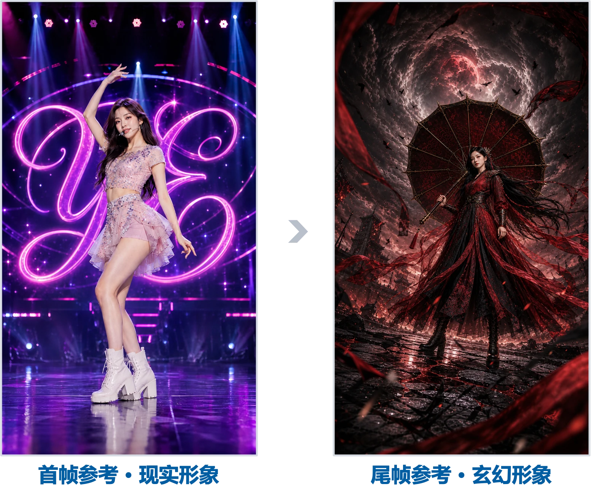
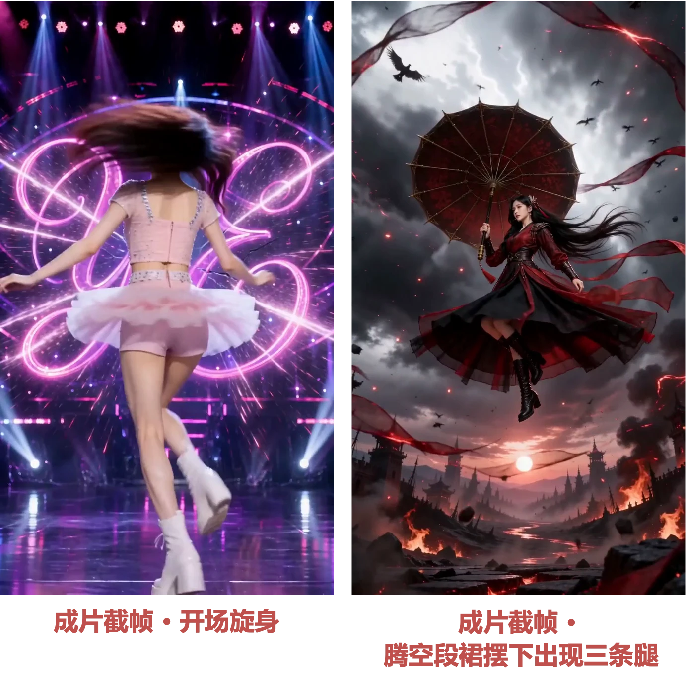
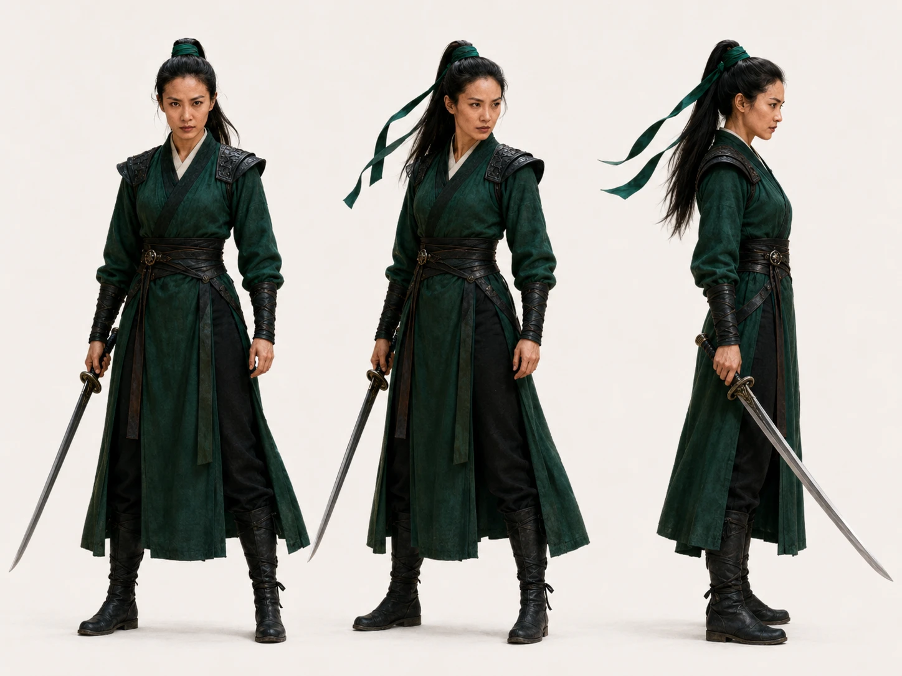
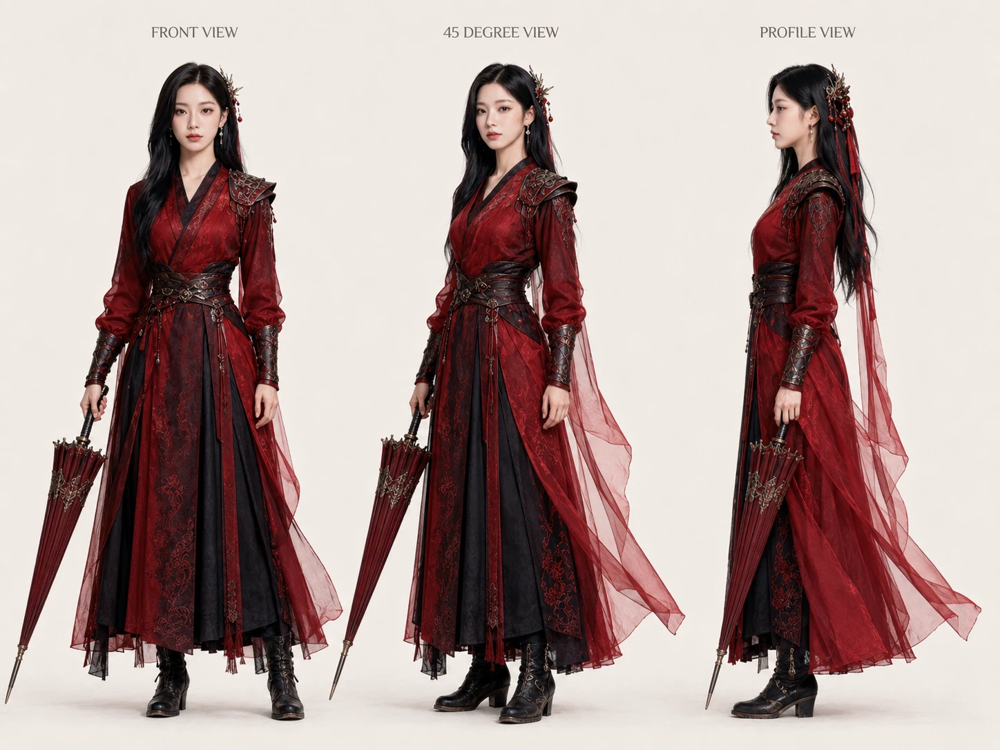
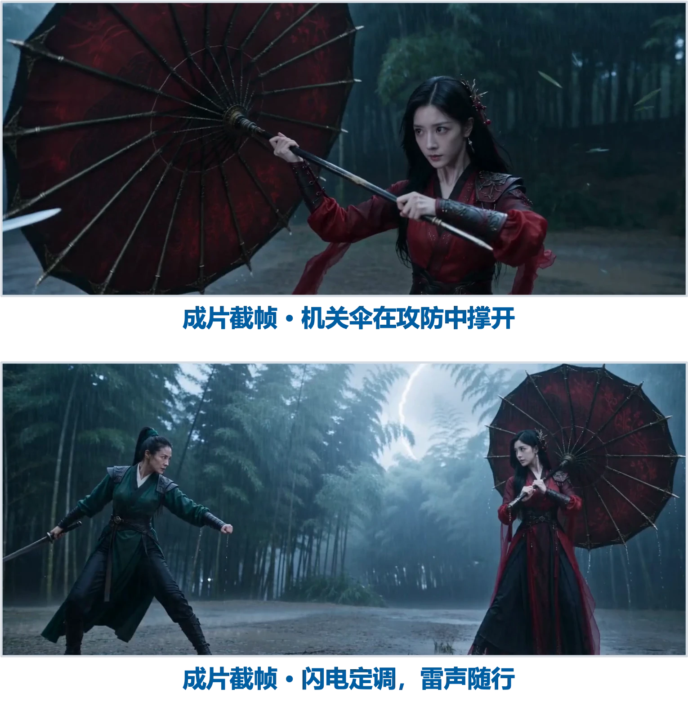

第一部分｜一句话模式
01｜案例·宜家宣传片
一句话生成一个完整视频。
输入只有一行字
生成一个讲述宜家这个品牌的宣传片
模型：即梦 Seedance 2.0，全能参考模式，16:9，720P。
成片 · 《宜家品牌宣传片》（15 秒）
人的角色像甲方
说需求，模型负责执行。不写分镜、不标镜头、不描述转场，把导演的位置让给模型。
这种用法适合快速出片、概念验证，以及给甲方或老板出 Demo。
02｜模型的导演思维
虽然一句需求没有规定片子怎么开场、怎样收尾，但是模型仍能正确理解"宣传片"要讲什么，自己补出一条从规模走向情感的叙事线，还给每个场景配了合适的景别。
五个场景排成了叙事弧
| 场景 | 画面 | 叙事功能 |
|---|---|---|
| 1 | 大型仓库，货架堆满箱子 | 开场建立品牌规模感 |
| 2 | 女人推购物车浏览家具 | 消费者体验场景 |
| 3 | 男人在明亮房间组装床架，微笑 | 产品使用场景加情感表达 |
| 4 | 情侣坐沙发看杂志 | 生活方式场景加品牌归属感 |
| 5 | 品牌 logo 加标语 | 品牌收尾 |
景别跟着内容自动匹配
宜家成片五场景景别总览
03｜模型的世界知识
提示词里没有任何背景资料，模型照样把卖场形态、购物体验、产品形态和品牌调性全部还原。
卖场形态
开场的大型仓库，正是宜家标志性的仓储式卖场。
购物体验
推着购物车在家具展间里穿行，宜家的动线就是这样走的。
产品形态
男人拧螺丝装床架，对应经典的平板包装。
品牌调性
情侣窝在沙发看杂志，对应宜家的温馨生活定位。
把品牌名交给模型之前，先判断这个品牌有没有足够的公开世界知识。认识这个品牌的人越多，一句话出片的成功率越高。
第二部分｜首尾帧模式
01｜案例·奇观创意
一张图加一段运镜
一张参考图当首帧，一段运镜文字，就拍出了从现实桌面穿进微缩山水的奇观镜头。
参考图定下世界
破碎的青花瓷杯，山水漫出杯口。

参考图破碎青花瓷杯
运镜文字定下路线
以鸟的第一视角向前飞行，镜头带有轻微自然飞行晃动，掠过参考图中的破碎青花瓷杯和青蓝山水，穿过杯身裂缝进入杯中微缩山水世界，云雾与瀑布缓缓流动，最后看到古亭里两位古人正在下围棋，其中一人正将棋子轻轻落在棋盘上，东方诗意电影质感。
成片 · 《杯中天地》（7 秒）
奇观镜头的经验分享
奇观镜头的成败，在写下设定和运镜路径的时候就定了。
设定要写到能看见
破碎的青花瓷杯、金缮裂纹、杯身的青蓝山水漫出杯口、在桌面延展成一片微缩山水。四句话交代了主体、状态、奇观和空间关系，模型不需要猜。
路径要有起点和终点
鸟的第一视角：掠过瓷杯，穿过杯身裂缝进入杯中山水，最后落到古亭两人对弈。一条路径给出视角、经过和落点，中间的运动交给模型补。
这类镜头适合概念向和氛围向
它的卖点是"现实里长出一个不该存在的世界"，不适合需要交代人物关系和具体情节的片子。
02｜案例·转场换装
首尾帧加分秒脚本
从霓虹舞台切到血月古城。
分秒脚本·节选
首帧参考【@角色】的角色、舞台；
尾帧参考【@角色压迫感场景图】的角色、伞和压迫感氛围场景；
角色三视图参考【@角色B】；
参考视频【@视频1】仅用于转场节奏、镜头冲击力、现实空间撕裂成古风世界的方式。
0-2秒：女主在粉紫霓虹舞台抬手旋身，低机位快速推进
2-4秒：舞台空间扭曲撕裂，霓虹灯带炸成粒子
4-6秒：舞台变燃烧古城，舞裙丝滑转成红黑武侠长裙
6-8秒：跃起转身，红光凝成机关伞猛然展开，血色冲击波爆散
8-10秒：落在破碎古城石街收伞定格，血月炸亮，停在正面眼神特写
成片 · 《转场换装》（10 秒）
四份输入的分工
分秒脚本把十秒切成五段，两端之间的撕裂交给模型补全。
首帧锁现实形象，尾帧锁玄幻形象

转场换装首尾帧参考对照
参考视频只提供节奏
取的是现实空间撕裂成古风世界的方式和镜头冲击力，女主的身份不变，参考视频里的角色也不复制过来。
分秒脚本控中间
每一段单独给指令，段与段之间的落点写清楚，转场就不会糊成一团。
复杂镜头的两个坑
两端和氛围都兑现了，中间的高难动作段踩了两个坑。
坑一 · 旋转疲劳
人物几乎全程在转：旋身、跃起转身，再叠上环绕运镜，动作没有起伏。根因在提示词，旋转类指令反复出现。
改法：减少旋转类指令，给动作留出停顿和不同的幅度。
坑二 · 肢体错误
腾空、裙摆遮挡、快速旋转三重叠加，是模型最容易出错的连续大动作，成片里裙摆下出现了三条腿。
改法：把高难动作切成短镜快剪，或用裙摆、道具遮挡。

转场换装成片截帧两个坑
复杂动作段要预留挑选和补救的余量。
第三部分｜全能参考模式
01｜案例·舞蹈复刻
一张图加一段视频
指定的角色真的跳出了参考视频里的那支舞，服装和造型全程没有变形。
参考视频 · 舞台角色的编舞素材
成片 · 12 秒
角色图锁外观，参考视频锁编舞与运镜。
角色一致性全程保持
走步、蹲下、旋转、伸手，服装和造型不变形，模型理解的是这个角色是谁。
动作迁移到位
参考视频里的舞蹈编排被完整复现，动作幅度大、干净利落、卡点精准。
参考素材的分工
每一份输入只管一件事：图片锁外观，视频锁编舞，同一段视频再锁运镜，文字锁氛围。
| 参考素材 | 锁住什么 |
|---|---|
| 角色图片：舞台造型的粉装角色 | 外观：服装、造型、比例 |
| 动作视频：一段舞蹈 | 编舞：手臂手势、身体律动、节奏卡点 |
| 同一段动作视频 | 运镜：跟随动作的推拉摇移和节奏感 |
| 文字提示词 | 氛围：彩色聚光灯、LED 大屏、烟雾、镜头光晕、演唱会实拍质感 |
同一段视频可以承担两个职责
素材的性价比来自这种复用：一段舞同时锁住了"跳什么"和"怎么拍"。
创作重心落在选素材上
选对角色图、选对动作视频、选对运镜风格，比把提示词写得更长更有效。
提示词怎么写
提示词用 @ 把每份参考指给模型，文字只写意图和氛围。
以【@角色】作为主体，
舞蹈动作参考【@跳舞视频参考】中的编舞，动作幅度大、干净利落、卡点精准，充满活力与感染力。
运镜方式参考【@跳舞视频参考】，跟随音乐节奏有韵律地推拉摇移。
彩色聚光灯随节奏扫动，LED 大屏光影变幻，轻微烟雾与镜头光晕，演唱会实拍质感。
@ 负责指认，文字负责描述
每一份素材都用 @ 显式点名，模型才知道哪张图管外观、哪段视频管动作。文字部分不再重复素材里已有的信息，只补素材给不了的东西：氛围、质感和风格。
什么情况用这套写法
角色和动作都交给素材锁定时，提示词的压力最小，几句话就能把氛围定下来。
02｜案例·武侠打斗
三张图加一段提示词
两个角色的外观和武器靠三张图钉死，其余全部交给提示词。
三张图各管一个对象

武侠打斗角色A三视图

武侠打斗角色B三视图
武侠打斗角色B机关伞
一段提示词交代其余全部
两位女子在打斗，【@角色A】和【@角色B】。角色B的武器可打开，如图【@角色B-武器】。
竹林，雨天，雨，风，闪电，竹叶，水洼。运镜种类丰富。武侠，徐克风格。雨声，闪电声，武器碰撞声，以及其他音效。无音乐。
成片 · 《武侠竹林打斗》（15 秒）
模型补出什么
提示词里的功能描述，到了模型手里会变成剧情、音效和环境的落地细节。
机关伞的戏
"角色B的武器可打开"这条功能描述，被编排成攻防反转的高潮：机关伞在打斗中撑开，形成压迫感。
音效对到帧
武器碰撞声绑定到具体接触帧，误差在 0.1 秒以内；闪电与雷声成对出现。
环境写多少就落地多少
竹林、雨、风、闪电、竹叶、水洼全部出现并参与叙事：水洼被踏碎、竹叶横飞、风吹弯竹竿。

武侠打斗成片截帧伞与闪电
风格标签的边界
"徐克风格"这类标签，模型能兑现元素，兑现不了剪辑节奏。
元素层成立
威亚式的腾挪、雨夜竹林、兵刃交击，这些徐克武侠的标志性元素都到位，氛围立得住。
节奏层偏保守
剪辑节奏不及徐克式的凌厉快剪，六个镜头里含一个五秒长镜，风格只学到了皮，没学到剪法。
怎么用风格词
写风格词之前先想清楚要的是元素还是节奏。要节奏，就得把镜头时长和切换方式写进提示词，让模型知道剪法该多快。
第四部分｜应用地图
01｜应用地图
你锁得越少，模型补得越多，自主发挥的空间就越大；锁得越多，结果越贴近预期。
| 意图 | 输入 | 你锁什么 | 模型补什么 | 案例 |
|---|---|---|---|---|
| 品牌宣传快速出片 | 一句话 | 创作意图 | 场景、叙事、运镜，其他零碎 | 宜家宣传片 |
| 奇观氛围创意镜头 | 一图 + 运镜文字 | 首帧形象、运镜 | 穿越的动态画面，其他零碎 | 奇观创意 |
| 强冲击变身转场 | 首尾帧 + 参考视频 + 分秒脚本 | 首尾形象、转场 | 中间的爆燃过渡，其他零碎 | 转场换装 |
| 角色动作迁移 | 角色图 + 动作视频 | 角色、动作、运镜 | 素材融合、音乐 | 舞台舞蹈复刻 |
| 多角色动作大场面 | 角色图 + 兵器图 + 提示词 | 角色、场景、运镜、风格、音效 | 武打动作 | 武侠竹林打斗 |
这张表的用法
从上往下看，你要锁的东西越来越多，模型的自由度越来越小。挑一行之前先回答一个问题：这条片子最不能出错的是哪一项，其余的都交出去。
小结
约束决定结果，自由度留给想象。
同一个工具，输入方式从一句话到多种参考加分秒脚本，控制力度依次加大。
一句话提示词
控制程度最低，适合概念验证和快速出 Demo。你要接受模型在场景、叙事和运镜上的自由发挥。
图片加文字提示词
把外观和首帧形象锁住，动态部分交给模型。适合奇观镜头和需要稳定角色形象的短片。
多种参考加分秒脚本提示词
控制程度最高，适合强冲击的转场和复杂动作。代价是写脚本的时间变长，还需要预留挑选和补救的余量。